Wenn du wirklich moderne Webseiten und Webanwendungen gestalten willst,
musst du deine Seiten so gestalten, dass sie auf allen nur denkbaren
Geräten gut aussehen. Hier erfährst du wie.
Moderne Browser beinhalten eine Vielzahl von Werkzeugen, um vorhandene
Webseiten zu analysieren, die Gestaltung eigener Seiten zu vereinfachen
und Fehler zu analysieren. Diese Seite zeigt, wie sie genutzt werden.
Kurzversion für Eilige
Die wichtigste Taste für Webentwickler ist F12.
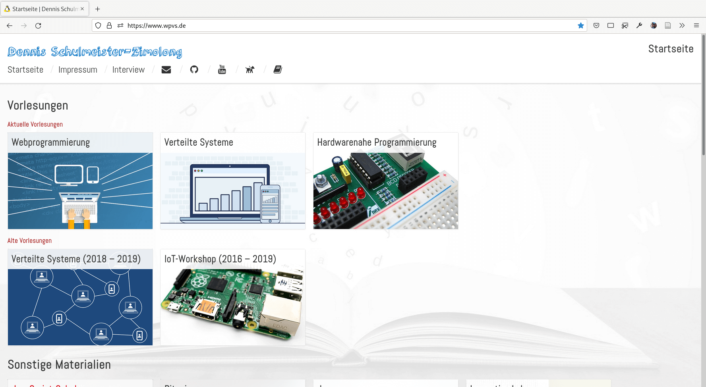
Denn sie öffnet in den meisten Browsern die Entwicklerwerkzeuge.
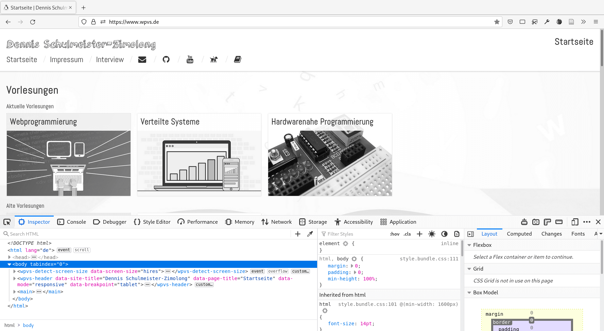
Hier finden wir unter anderem den DOM-Inspektor (in Chrome „Elemente” genannt), …
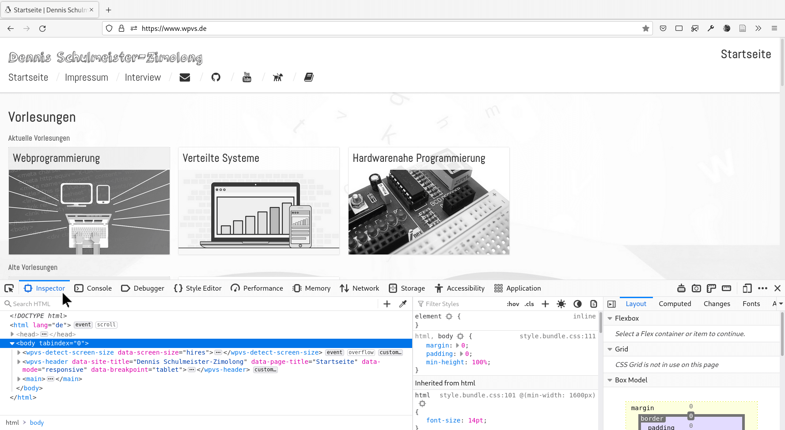
… die JavaScript-Konsole …
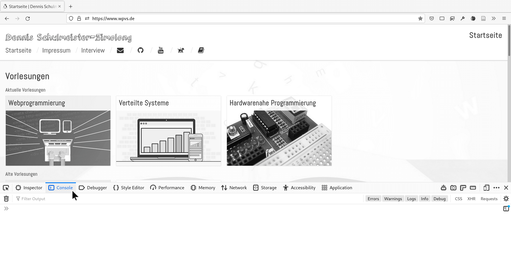
… einen Debugger …
… oder die Netzwerkanalyse.
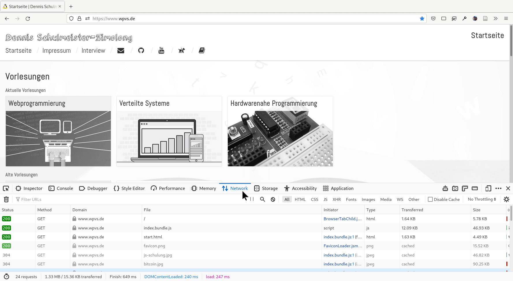
Im DOM-Inspekter wird die HTML-Struktur der Seite (das Document Object Model) dargestellt.
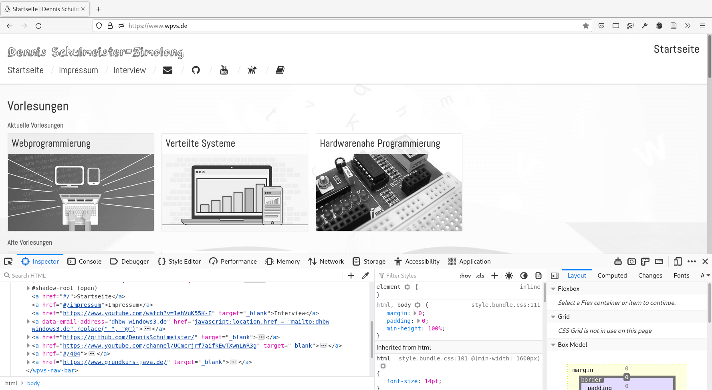
Um sich über ein Element zu informieren, kann es im Quellcode einfach angeklickt werden.
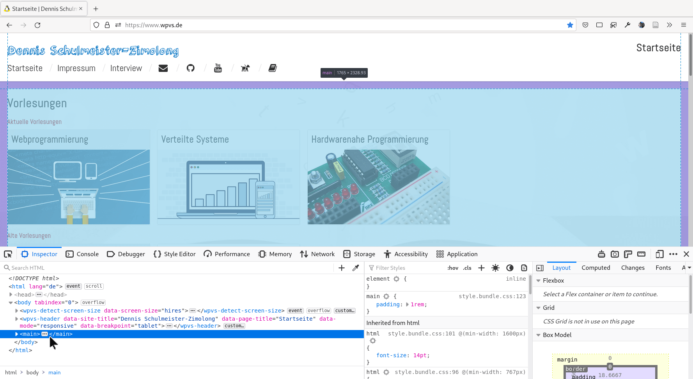
Oder man schaltet die Funktion „Element auf Seite auswählen” ein …
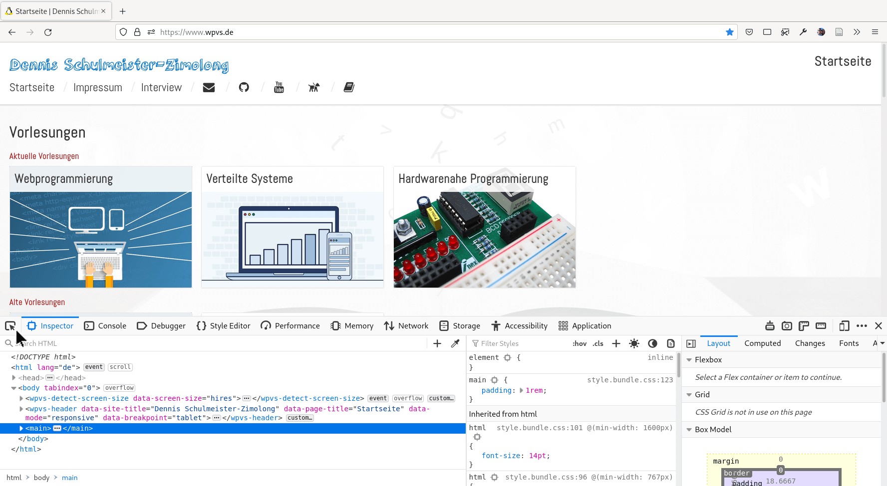
… und fährt dann mit der Maus darüber.
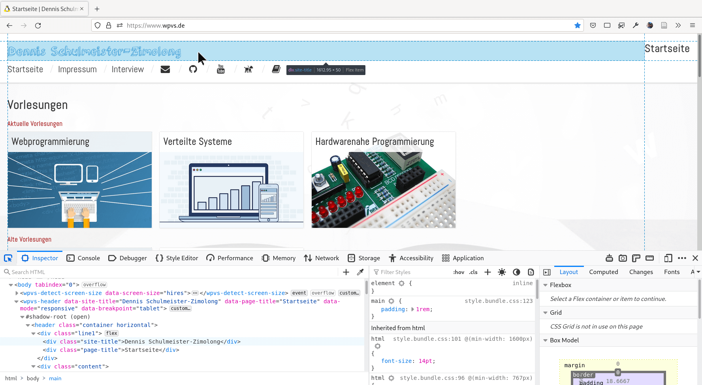
Rechts unten werden die CSS-Eigenschaften des ausgewählten Elements angezeigt.
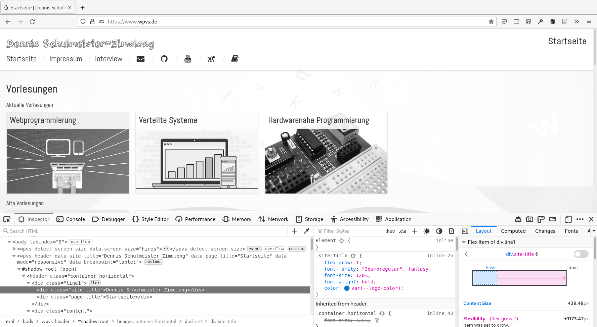
Jede Änderung wird sofort aktiv.
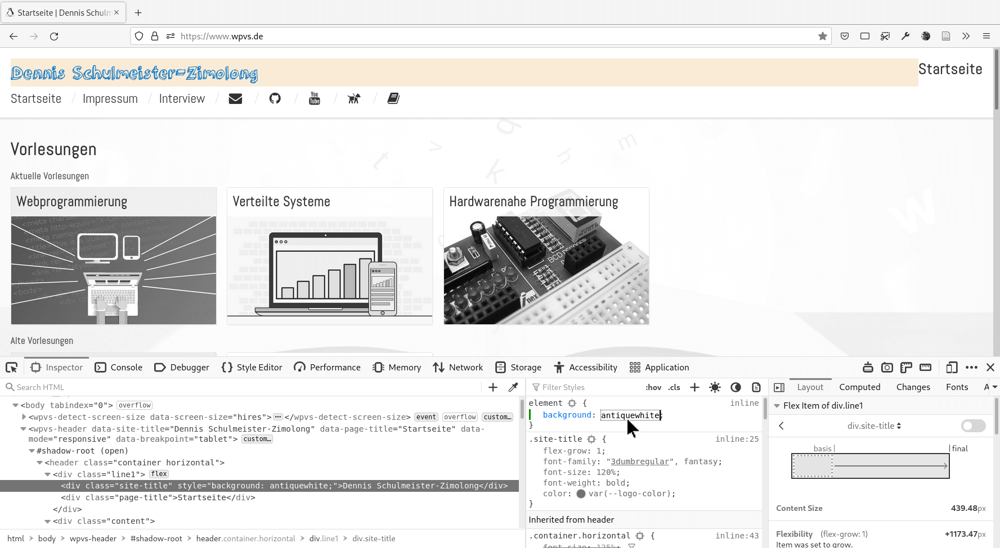
Es kann aber auch die HTML-Struktur verändert werden.
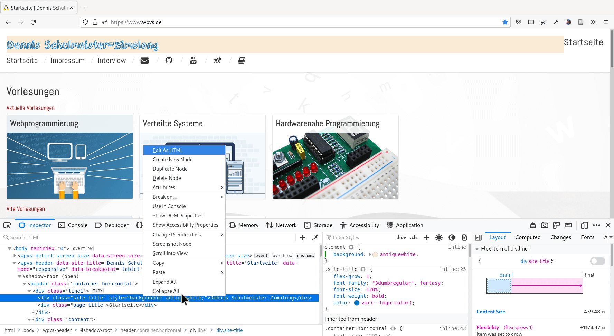
Auch diese Änderungen werden sofort aktiv.
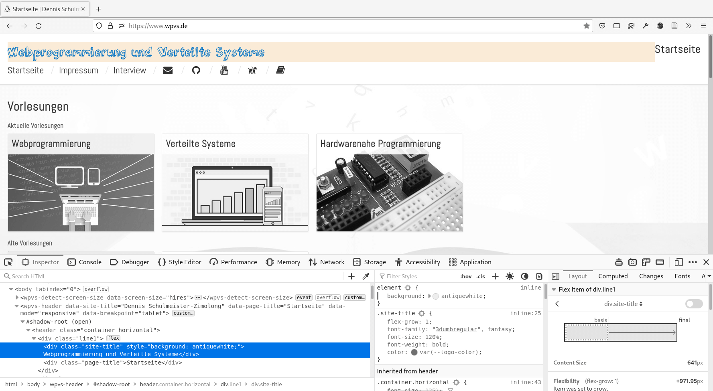
Man kann somit ganz leicht Dinge ausprobieren, ohne den Browser zu verlassen.
Ein weiteres, unverzichtbares Werkzeug ist der Responsive-Design-Modus des Browsers.
Diesen erreicht man mit Shift+Strg+M oder über einen
Knopf in den Entwicklungswerkzeugen.
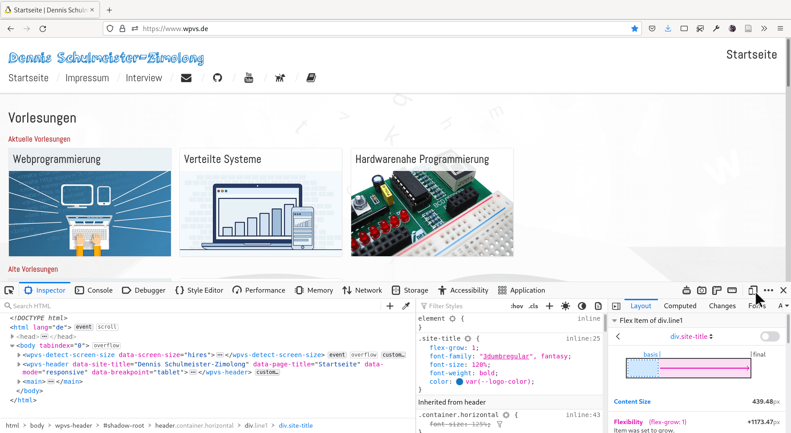
Dort kann man zum Beispiel prüfen, wie eine Seite auf dem Smartphone aussieht.
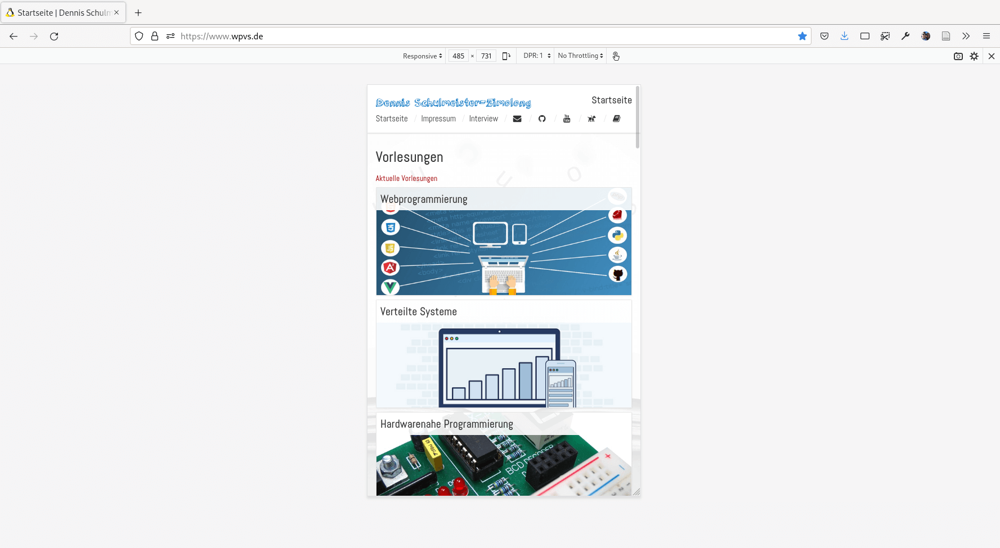
Natürlich kann die Ansicht auch im Querformat erfolgen.
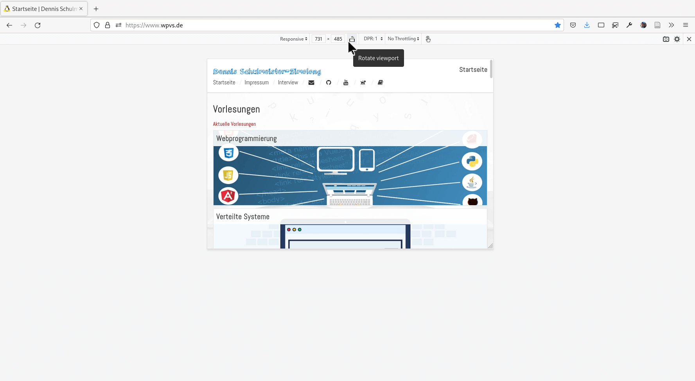
Aber auch jede andere Bildschirmauflösung ist möglich.
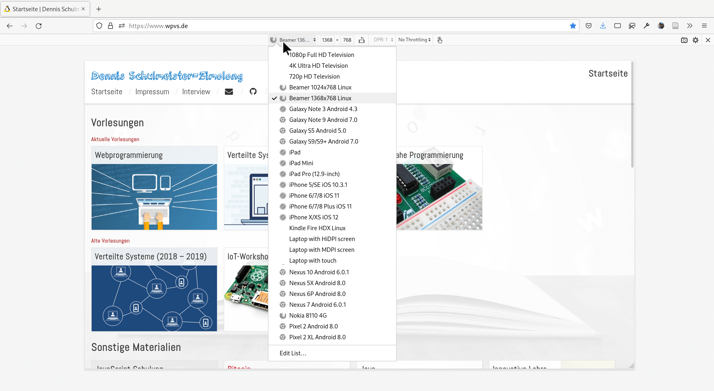
Darüber hinaus kann eine langsame Internetverbindung simuliert werden.
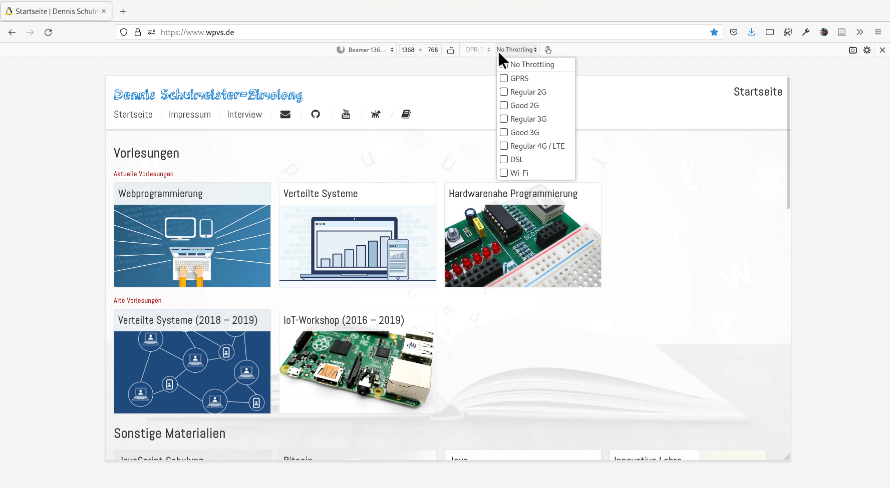
Es gibt somit keinen Grund, eine Seite nicht für mobile Endgeräte zu optimieren.
Das Video zeigt, welche Entwicklungswerkzeuge am häufigsten benötigt werden und wie
damit das Layout einer Seite untersucht werden kann.
Das Video zeigt, wie unterschiedliche Bildschirmgrößen und Netzgeschwindigkeiten
im Responsive-Design-Modus simuliert werden können.
Obwohl es sich hier um das Kapitel „Responsive Webdesign” handelt, funktionieren die Beispiele
nur auf großen Bildschirmen vernünftig. Auf einem Smartphone ist das zum Einbinden der Beispiele
verwendete <iframe>-Element zu klein, so dass die
Media Queries zum Erkennen größerer Bildschirme nicht funktionieren und im Grunde genommen immer
die Smartphone-Version angezeigt wird. 🙄
Mehr über Media Queries
Media Queries ermöglichen es, einfache Fallunterscheidungen in einem Stylesheet vorzunehmen,
indem die Eigenschaften des Ausgabegeräts abgefragt werden. Somit lassen sich Layoutregeln
speziell für Smartphones oder die Druckausgabe erzeugen.
Alle Ausgabemedien mit einer Mindestbreite von 800 Pixeln.
(min-width: 800px)
Dasselbe wie oben. Wenn alle Medien gemeint sind, kann das all fehlen.
print
Ausgabe auf dem Drucker. In diesem Fall bitte alle überflüssigen Elemente mit display: none ausblenden.
(orientation: landscape), (min-width: 1024px)
ODER-Verknüpfung mehrerer Prüfungen.
screen (max-width: 600px) and screen (orientation: landscape)
UND-Verknüpfung mehrerer Prüfungen.
Responsive Breakpoints
Gute Grenzwerte zur Prüfung der Bildschirmgröße zu finden, ist nicht leicht.
Die folgenden Werte, welche die Bootstrap-Entwickler durch umfangreiche Tests
ermittelt haben, bieten einen guten Anhaltspunkt.
(max-width: 768px)
Kleine Geräte und Smartphones
(min-width: 768px)
Mittlere Geräte und Tablets
(min-width: 992px)
Sehr große Tablets oder kleine Computerbildschirme
Schaltet für ein Element den Flexbox-Algorithmus ein, wenn der Bildschirm
mindestens 800px breit ist.
@media (orientation: landscape) {
html {
background-image: url(landscape.jpg);
}
}
Setzt ein spezielles Hintergrundbild, wenn die Webseite im Querformat angezeigt wird.
Vorgehen bei der Entwicklung
Das Video zeigt, wie eine einfache Webanwendung nach dem Mobile-First-Prinzip entwickelt
wird. Dabei entsteht zunächst die Smartphone-Ansicht, die anschließend in wenigen Schritten
zur Desktop-Ansicht ausgebaut wird.
Häufig anzutreffende Designs
<!DOCTYPE html>
<html lang="de">
<head>
<meta charset="utf-8" />
<title>Wir lieben Hunde</title>
<meta name="viewport" content="width=device-width, initial-scale=1" />
<!-- Stylesheet und Icon -->
<link rel="stylesheet" id="style-base" href="style.css" />
<link rel="shortcut icon" href="img/logo.svg" />
<!-- Google Fonts -->
<link rel="preconnect" href="https://fonts.googleapis.com" />
<link rel="preconnect" href="https://fonts.gstatic.com" crossorigin />
<link href="https://fonts.googleapis.com/css2?&family=Pacifico&display=swap" rel="stylesheet" />
<!-- Fontello Icons -->
<link rel="stylesheet" href="fontello/css/fontello.css" />
</head>
<body>
<!-- Kopfbereich mit Suchfeld -->
<header>
<div class="searchbar">
<div class="icon icon-search"></div>
<div class="input" contenteditable="true"></div>
<div class="icon icon-camera"></div>
</div>
<a class="icon icon-paw" href="#"></a>
</header>
<!-- Hauptbereich mit den darzustellenden Einträgen -->
<main>
<h2>Wahre Freunde</h2>
<p>
Entdecken Sie die liebsten Hunde der Welt. Für Familien mit
und ohne Kinder, für Singles und alle anderen Menschen. Ein
Hund ist ein Freund für's Leben. Einfach auf einen Eintrag
klicken, um mehr zu erfahren.
</p>
<div id="dog-cards" class="card-container">
<div class="card">
<h2 class="card-title">Ernsto</h2>
<img src="img/dog1.jpg" alt="" class="card-image" />
<p class="card-body">
Ernesto ist wirklich ein liebenswertes Kerlchen.
Dieser kleine Welpe verträgt sich prima mit Kindern
und anderen Hunden.
</p>
</div>
<!--
Weitere Karten für die anderen Hunde ...
-->
</div>
</main>
<!-- Fußbereich -->
<footer>
<img class="logo" src="img/logo.svg" alt="" />
<span class="slogan">Wir lieben Hunde!</span>
</footer>
</body>
</html>
Wesentliches Merkmal dieses Beispiel ist die Anordnung der Karten
auf kleinen und großen Bildschirmen. Auf kleinen Bildschirmen stehen
sie maximal breit untereinander und auf großen Bildschirmen mit fester
Breite in Gitterformation. Dies wird durch eine Flexbox und einen
Media Query erreicht.
Der Flexbox-Algorithmus wird aber auch an vielen anderen Stellen genutzt,
um zum Beispiel den Footer immer an das untere Bildschirmende zu drücken,
selbst wenn der Hauptbereich nur wenig Inhalt besitzt. Die Anordnung des
Suchfelds und des Icons danaben wurde ebenfalls mit einer Flexbox realisiert,
wie die Gestaltung des Suchfelds selbst.
Um die Wirkungsweise der einzelnen Flexboxen besser nachvollziehen zu
können, wird das Stylesheet hier in mehreren Teilabschnitten gezeigt.
html {
/* Dynamische Schriftgröße je nach Bildschirmgröße */
font-family: sans-serif;
font-size: max(2.4vh, 11pt);
/* CSS-Variablen für mehrfach benötigte Werte */
--color-light-grey: rgb(230, 230, 230);
--color-dark-grey: rgb(120, 120, 120);
--border-radius: 0.5rem;
}
body {
/* Inhalt der Seite nicht direkt am Fensterrand kleben lassen */
margin: 0;
padding: 1em;
/* Auch bei nur wenig Inhalt das <body>-Element so hoch wie das Browser-
* fenster machen, damit die Positionierung von Header, Hauptbereich und
* Footer mit der Flexbox funktioniert */
min-height: 100vh;
box-sizing: border-box;
/* Den Inhalt als vertikale Flexbox anordnen und damit insb. den Footer
* an den unteren Bildschirmrand drücken. */
display: flex;
flex-direction: column;
justify-content: space-between;
}
main {
/* Dem Hauptbereich innerhalb seiner Flexbox maximale Höhe geben, damit er
* bei zu wenig Inhalt nicht vertikal zentiert wird. */
flex: 1;
}
header {
/* Inhalte im Header mit dem Flexbox-Algorithmus nebeneinander und maximal
* weit auseinander anordnen, damit das Suchfeld ganz Links und das Icon
* daneben ganz rechts steht. */
display: flex;
justify-content: space-between;
align-items: center;
gap: 0.5em;
/* Schrift etwas größer als beim Rest der Seite. */
font-size: 130%;
}
header .searchbar {
/* Das Suchfeld innerhalb seiner Flexbox maximal verbreitern. Funktioniert,
* weil es das einzige Element mit der flex-Anweisung ist. Hätten mehrere
* Kinder Flexbox diese Anweisung, würde die Zahl das jeweilige Größen-
* verhältnis definieren. */
flex: 1;
/* Inhalt im Suchfeld ebenfalls mit dem Flexbox-Algorithmus nebeneinander
* und maximal weit auseinander anordnen, damit die beiden Icons jeweils
* ganz links und ganz rechts stehen.*/
display: flex;
justify-content: space-between;
align-items: center;
gap: 0.25em;
/* Hintergrundfarbe, Innenabstand und runde Ecken */
background-color: var(--color-light-grey);
padding: 0.5em;
border-radius: var(--border-radius);
}
header .searchbar .input {
/* Dem eigentlichen Eingabefeld maximale Breite in der Flexbox geben. */
flex: 1;
/* Hintegrundfarbe und Rahmen entfernen, da durch das Elternelement schon
* schon ein Hintergrund definiert ist. */
border-width: 0;
background: transparent;
outline: none;
}
header, /* Generell alle Inhalte im Header */
header a, /* Alle unbesuchten Links im Header */
header a:visited { /* Alle besuchten Links im Header */
/* Schriftfarbe, keine Unterstreichung, Fettschrift */
color: var(--color-dark-grey);
text-decoration: none;
font-weight: bold;
}
@media (min-width: 20em) {
header {
/* Breite des Headers auf großen Bildschirmen begrenzen und den Header
* horizontal zentrieren */
width: 20em;
max-width: 100%;
margin: 0 auto;
}
}
main p {
/* Text im Hauptbereich als Blocksatz mit Silbentrennung */
text-align: justify;
hyphens: auto;
word-wrap: break-word;
}
.card-container {
display: flex;
flex-direction: column;
gap: 2em;
margin: 2em 0 2em 0;
}
.card {
/* Hellgrauer Rahmen mit runden Ecken für die Karten. "overflow: hidden"
* wird zusätzlich benötigt, damit der Hintergrund der Titelzeile durch
* die runden Ecken begrenzt wird. */
border: 1px solid var(--color-light-grey);
border-radius: var(--border-radius);
overflow: hidden;
/* Mauszeiger für anklickbare Elemente */
cursor: pointer;
}
.card .card-title {
/* Automatische Margins des <h2>-Elements auf null setzen, dafür aber
* innerhalb des Elements etwas Platz zu seinem Inhalt lassen */
margin: 0;
padding: 0.5rem;
/* Kartentitel grau einfärben */
background-color: var(--color-light-grey);
color: var(--color-dark-grey);
}
.card .card-image {
/* Bild maximal breit darstellen */
display: block;
width: 100%;
}
.card .card-body {
/* Automatische Margins des <p>-Elements auf null setzen, dafür aber
* innerhalb des Elements etwas Platz zu seinem Inhalt lassen */
margin: 0;
padding: 0.5rem;
}
@media (min-width: 45em) {
.card-container {
/* Karten auf großen Bildschirmen nebeneinander anordnen */
flex-direction: row;
flex-wrap: wrap;
justify-content: center;
}
.card {
/* Breite der Karten auf großen Bildschirmen begrenzen */
width: 23em;
}
}
footer {
/* Den Inhalt des Footers mit dem Flexbox-Algorithmus horizontal und
* vertikal zentrieren */
display: flex;
justify-content: center;
align-items: center;
}
footer .logo {
/* Größe des Logos definieren. Die Höhe ergibt sich automatisch. */
width: 5em;
}
footer .slogan {
/* Schriftfarbe, Größe und Farbe für den Slogan */
font-family: 'Pacifico', cursive;
font-size: 200%;
color: DeepPink;
}
Ein einfaches Muster für Navigationsmenüs ist, ihre Inhalte auf großen Bildschirmen
nebeneinander und auf kleinen Bildschirmen untereinander anzuordnen. Typischerweise
wird das Menü hierfür mit dem Flexbox-Algorithmus und einem Media Query ausgerichtet.
Zusätzlich wird es auf mobilen Geräten hinter einem „Hamburger”-Button mit dem Symbol
☰ versteckt.
Im Stylesheet sind hierfür die Klassen large-screen-hidden und
small-screen-hidden vorgesehen, um Teile des Menüs nur auf kleinen oder nur auf
großen Bildschirmen darzustellen. Die Menüeinträge werden mit small-screen-hidden
zunächst unsichtbar gemacht, können mit JavaScript aber jederzeit wieder hergeholt werden,
indem die Klasse temporär entfernt wird. Zum Schließen des Menüs wird die Klasse wieder gesetzt.
In der Regel wird die CSS-Anweisung display: none verwendet,
um HTML-Elemente unsichtbar zu machen. Das Beispiel zeigt darüber hinaus einen Trick, wie das
Öffnen und Schließen des Menüs animiert werden kann.
html {
/* Dynamische Schriftgröße je nach Bildschirmgröße */
font-family: sans-serif;
font-size: max(2.4vh, 11pt);
/* Hintergrundfarbe und Schriftfarbe */
background-color: rgb(240, 230, 217);
color: rgb(209, 0, 0);
}
body {
/* Vordefinierte Abstände zum Fensterrand übersteuern */
margin: 0;
padding: 0;
}
header, main {
/* Einheitlicher Innenabstand für den Kopf- und Hauptbereich */
padding: 1rem;
}
@media (max-width: 60em) {
/* CSS-Klassen, um Inhalte auf kleinen Bildschirmen auszublenden. Die Klasse
* 'small-screen-hidden' kann entweder einzeln oder zusammen mit der Klasse
* 'animated' verwendet werden. Einzeln wird das Element mit 'display: none'
* einfach ausgeblendet. Zusammen mit der Klasse 'animated' wird die maximale
* Höhe des Elements auf Null gesetzt, um es animiert zuzuklappen. */
.small-screen-hidden:not(.animated) {
display: none !important;
}
.small-screen-hidden.animated {
max-height: 0 !important;
}
.animated {
/* Die maximale Höhe muss angepasst werden, wenn sich die Anzahl der
* Menüeinträge ändert, damit des Menü vollständig angezeigt und die
* Animation beim Zuklappen ohne Zeitversatz sichtbar wird. */
max-height: 10em;
transition: max-height 1s;
overflow: hidden;
}
}
@media (min-width: 60em) {
/* CSS-Klasse, um Inhalte auf großen Bildschirmen auszublenden */
.large-screen-hidden {
display: none !important;
}
}
header {
/* Schriftart */
font-family: 'Calistoga', cursive;
/* Größere Schrift auf kleinen Bildschirmen */
font-size: 120%;
/* Kleiner Schatten als Abgrenzung zum Haubtbereich */
box-shadow: 0 1px 2px rgba(0,0,0, 0.2);
}
header .logo {
/* Größe des Logos, die Höhe ergibt sicht automatisch */
width: 3em;
}
header .app-header {
/* Die Inhalte des App-Headers für die mobile Ansicht mit Hilfe des
* Flexbox-Algorithmus so anordnen, dass ganz links das Icon zum Auf-
* und Zuklappen des Menüs und ganz rechts das Logo erscheint */
display: flex;
justify-content: space-between;
align-items: center;
}
header .toggle-button {
/* Für das Menü-Icon denselben Mauszeiger wie bei einem Link verwenden */
cursor: pointer;
}
header nav ul {
/* Einträge des Navigationsmenüs nicht wie eine typische Liste darstellen */
list-style: none;
padding: 0;
margin: 0;
/* Stattdessen die Einträge untereinander, horizontal zentriert anordnen */
display: flex;
flex-direction: column;
align-items: center;
gap: 0.5em;
}
header, /* Der Kopfbereich allgemein */
header a, /* Unbesuchte Links im Kopfbereich */
header a:visited { /* Besuchte Links im Kopfbereich */
/* Schriftfarbe und keine Unterstreichung */
color: rgb(70, 49, 49);
text-decoration: none;
}
header a:hover {
/* Links unterstreichen, wenn die Maus darüber fährt */
text-decoration: underline;
}
@media (min-width: 60em) {
header {
/* Auf großen Bildschirmen zurück zur normalen Schriftgröße */
font-size: 100%;
/* Auf großen Bildschirmen die Inhalte des Headers mit Hilfe des
* Flexbox-Algorithmus so anordnen, das ganz links das Menü und
* ganz rechts das Logo erscheint */
display: flex;
justify-content: space-between;
align-items: center;
}
header nav ul {
/* Die Inhalte des Menüs auf großen Bildschirmen nebeneinander statt
* untereinander anordnen */
flex-direction: row;
flex-wrap: wrap;
}
}
main {
/* Auf kleinen Bildschirmen wird eigentlich keine Flexbox benötigt.
* Allerdings kann mit 'gap: 1em' auch hier leichter ein einheitlicher
* Abstand zwischen den Bildern erzielt werden. */
display: flex;
flex-direction: column;
gap: 1em;
}
main .hamburger {
/* Rahmen, runde Ecken und Schatten für die Bilder im Hauptbereich */
border-radius: 1em;
border: 3px solid white;
box-shadow: 2px 2px 3px rgba(0,0,0, 0.25);
/* Breite der Bilder auf 100% des Elternelements begrenzen. Wichtig, da
* die Bilder sonst durchaus breiter als das Browserfenster dargestellt
* werden können. */
width: 100%;
/* Selben Mauszeiger wie bei anklickbaren Links verwenden */
cursor: pointer;
}
@media (min-width: 55em) {
main {
/* Auf großen Bildschirmen die Breite des Hauptbereichs begrenzen
* und diesen horizontal zentriert anordnen. Durch den Trick mit
* 'margin: 0 auto' können wir auf eine Flexbox als Elternelement
* verzichten, nur um den Hauptinhalt zu zentrieren. */
width: 55em;
margin: 0 auto;
/* Die Inhalte des Elements selbst werden allerdings durchaus mit dem
* Flexbox-Algorithmus angeordnet. Auf großen Bildschirmen diese so
* ändern, dass mehrere Bilder in einer Zeile stehen können und die
* Bilder automatisch in die nächste Zeile umbrechen. */
flex-direction: row;
flex-wrap: wrap;
}
main .hamburger {
/* Auf großen Bildschirmen die Größe der Bilder so begrenzen, dass
* in einer Zeile immer genau zwei Bilder nebeneinander stehen können */
width: 25em;
}
}
An dieser Stelle schauen wir uns das Beispiel vom Anfang des Kapitels genauer an
und konzentrieren uns dabei auf das Menü am linken Bildschirmrand. Auf großen
Bildschirmen ist es dauerhaft sichtbar und wird unterhalb des Suchbereichs angezeigt.
Auf kleinen Bildschirmen fährt es stattdessen vom linken Bildschirmrand in den
Sichtbereich hinein und überlagert diesen teiweise. Zusätzlich wird der Hintergrund
abgedunkelt.
Wenig überraschend sind der Header und das Menü jeweils als Flexbox ausgeführt.
Der Slide-In-Effekt erfordert jedoch, dass das Menü absolut positioniert wird.
Header und Menü besitzen daher feste Größen und Positionsangaben, so dass das
Menü zum Ausblenden einfach nur links vom Bildschirmrand geparkt und bei Bedarf
wieder nach rechts verschoben werden muss. In der Desktop-Version „parkt” es
stattdessen direkt in Zielposition, so dass hier der Slide-In-Effekt entfällt.
Der abgedunkelte Hintergrund wird durch ein zusätzliches HTML-Elemenet erzielt,
das ebenfalls mit absoluter Positionierung über den gesamten Bildschirm gelegt
wird. Die Anweisung z-index stellt dabei sicher, dass das Element
über dem Seiteninhalt aber hinter dem Menü liegt.
html, body {
/* Voreingestellte Abstände zum Fensterrand unterdrücken */
margin: 0;
padding: 0;
}
html {
/* Allgemeine Schriftart und Größe */
font-family: sans-serif;
font-size: 2.3vh;
}
.flex-stretch {
/* Hilfsklasse für maximal große Flexbox-Inhalte */
flex-grow: 1;
flex-shrink: 1;
}
header {
/* Kopfbereich am oberen Bildschirmrand dauerhaft anzeigen */
position: sticky;
top: 0;
/* Größe und Abstände im Header */
padding: 0.5em;
height: 3em;
box-sizing: border-box;
/* Ausrichtung der Inhalte als Flexbox */
display: flex;
justify-content: space-between;
align-items: center;
/* Hintergrund- und Schriftfarbe */
background-color: white;
color: #606060;
}
header .hamburger-toggle {
/* Hamburger-Button über das geöffnete Menü drüber legen */
z-index: 30;
/* Selber Mauszeiger wie für Links */
cursor: pointer;
}
header .search {
/* Suchzeile in der mobilen Ansicht ausblenden */
display: none;
}
@media (min-width: 80em) {
header {
/* Etwas andere Abstände für den Header auf großen Bildschirmen */
margin-left: 0;
padding-left: 0.5em;
}
}
#modal-backdrop {
/* Element zum Verdunkeln über die gesamte Seite legen */
position: fixed;
top: 0;
bottom: 0;
left: 0;
right: 0;
/* Zunächst ist die Hintergrunfarbe komplett durchsichtig, ihre Änderungen werden
* jedoch animiert, um dadurch einen schönen Überblendeffekt zu erzielen */
background-color: rgba(0,0,0, 0);
transition: background-color 0.5s;
}
#modal-backdrop.zindex {
/* Standardmäßig liegt das Verdunklungselement hinter allen anderen Inhalten */
z-index: -999;
}
#modal-backdrop.visible {
/* Zum sichtbarschalten seine Farbe und seine Z-Position ändern, um damit den
* Hauptinhalt der Seite zu übermalen */
background-color: rgba(0,0,0, 0.5);
z-index: 10;
}
#side-menu-wide {
/* Das Menü liegt oberhalb der Verdunklung aber unterhalb des Hamburger-Buttons */
z-index: 20;
/* Das Menü besitzt eine feste Breite, ist maximal Hoch und zunächst außerhalb
* des Browserfensters geparkt, bis es angezeigt werden soll.*/
position: fixed;
top: 0em;
bottom: 0;
width: 15em;
left: -15em;
/* Innenabstand und Scrollbalken für extralange Menüs */
padding: 0.5em;
box-sizing: border-box;
overflow: scroll-y;
/* Weißen Hintergrund setzen, damit die HTML-Elemente hinter dem Menü nicht durchscheinen. */
background-color: white;
/* Menüinhalte als Flexbox ausrichten */
display: flex;
flex-direction: column;
align-content: stretch;
list-style: none;
margin: 0;
}
#side-menu-wide.animated {
/* Änderungen an der linken X-Position immer animieren */
transition: left 0.5s;
}
#side-menu-wide.visible {
/* Zum Einblenden einfach das Menü in den sichtbaren Bereich der
* Seite hinein verschieben */
left: 0;
}
@media (min-width: 80em) {
#side-menu-wide {
/* Auf großen Bildschirmen das Menü gleich innerhalb der sichtbaren Bereichs
* der Seite anzeigen, dafür aber nicht ganz oben, um den Header nicht zu übermalen. */
left: 0;
top: 3em;
padding-top: 1em;
}
#side-menu-wide li.toggle-menu {
/* Hamburger-Button auf großen Bildschirmen ausblenden, da ohne Funktion */
display: none;
}
main {
/* Links vom Hauptinhalt genügend Platz für das Menü lassen, damit das Menü
* den Hauptinhalt auf großen Bildschirmen nicht verdeckt */
margin-left: 15em;
}
}
/* Sonstige Anweisungen zur Darstellung der Menüinhalte */
#side-menu-wide li {
padding: 0.5em 0 0.5em 0;
}
#side-menu-wide li.line {
border: 0px solid lightgrey;
border-bottom-width: 1px;
}
#side-menu-wide .label {
margin-left: 1em;
}
.side-menu a, .side-menu a:visited {
color: #303030;
text-decoration: none;
}
.side-menu a:hover {
color: #606060;
}
Der einfachste Quellcode erzeugt manchmal den größten Effekt. Hier sehen
wir ein Menü, das auf großen und kleinen Bildschirmen gleichermaßen gut
funktioniert. Manchmal ist weniger tatsächlich mehr. Der Trick ist einfach,
die Sichtbarkeit des Menüs mit JavaScript umzuschalten, indem die CSS-Klassen
invisble und hidden entfernt oder gesetzt werden.
Im einfachsten Fall müsste nur die Klasse hidden verwendet werden,
da diese mit display: none bereits dafür sorgt,
dass das Menü vollständig verschwindet. Die Klassen hidden,
fade-in und fade-out fügen dem aber noch einen netten
Ein-/Ausblendeffekt hinzu.
html {
/** Schriftart und Größe */
font-family: 'Heebo', sans-serif;
font-size: max(2.8vh, 11pt);
/* Hintergrundbild */
background-image: url(background.jpg);
background-size: cover;
background-position: center;
background-attachment: fixed;
}
html, body {
/* Vordefinierte Abstände zum Bildschirmrand übersteuern */
padding: 0;
margin: 0;
}
html, /* Die Seite allgemein */
a, /* Unbesuchte Links */
a:visited { /* Besuchte Links */
/* Weiße Schriftfarbe und keine Untertreichung */
color: rgb(220, 220, 220);
text-decoration: none;
}
a:hover {
/* Links unterstreichen, wenn die Maus darüber fährt */
text-decoration: underline;
}
header {
/* Innenabstand und Schriftart */
padding: 1rem;
font-family: 'Pacifico', cursive;
/* Inhalt mit dem Flexbox-Algorithmus so anordnen, dass das Seitentitel
* ganz links und der Link zum Öffnen des Menüs ganz rechts erscheint */
display: flex;
justify-content: space-between;
align-items: center;
}
header .brandname {
/* Header durch das Menü nicht übermalen */
z-index: 999;
}
header .toggle-button {
/* Schriftfarbe und Mauszeiger */
color: BurlyWood;
cursor: pointer;
/* Header durch das Menü nicht übermalen */
z-index: 999;
}
header .toggle-button:hover {
/* Buttontext unterstreichen, wenn die Maus darüber fährt */
text-decoration: underline;
}
#main-menu {
/* Gesamten Bildschirm mit dem Menü verdecken */
position: fixed;
top: 0;
right: 0;
left: 0;
bottom: 0;
background-color: rgb(30, 30, 30);
overflow-y: scroll;
/* Inhalt horizontal und vertikal zentrieren */
display: flex;
justify-content: center;
align-items: center;
/* Menü ein-/ausblenden */
transition: opacity 1s;
opacity: 1;
}
#main-menu ul {
/* Menüeinträge nicht als typische Listenelemente darstellen */
list-style: none;
padding: 0;
margin: 0;
/* Menüeinträge untereinander und zentriert anordnen */
display: flex;
flex-direction: column;
justify-content: center;
align-items: center;
gap: 0.5em;
}
/* Beim Ein-/Ausblenden zunächst nur die Transaprenz des Menüs ändern,
* später mit JavaScript das Menü richtig vom Bildschirm entfnern, indem
* die Klasse 'hidden' gesetzt wird */
#main-menu.invisible {
opacity: 0;
}
#main-menu.hidden {
display: none;
}
/* Zusätzliche Animation zum Einblenden der einzelnen Menüeinträge */
#main-menu li.fade-in:nth-child(1) { animation-delay: 0.125s; }
#main-menu li.fade-in:nth-child(2) { animation-delay: 0.250s; }
#main-menu li.fade-in:nth-child(3) { animation-delay: 0.375s; }
#main-menu li.fade-in:nth-child(4) { animation-delay: 0.500s; }
#main-menu li.fade-in:nth-child(5) { animation-delay: 0.625s; }
#main-menu li.fade-in:nth-child(6) { animation-delay: 0.750s; }
#main-menu li.fade-in:nth-child(7) { animation-delay: 0.875s; }
@keyframes fadein {
0% {
opacity: 0;
}
100% {
opacity: 1;
}
}
#main-menu .fade-in {
opacity: 0;
animation-name: fadein;
animation-duration: 0.5s;
animation-iteration-count: 1;
animation-fill-mode: forwards;
}
/* Zusätzliche Animation zum Ausblenden der einzelnen Menüeinträge */
#main-menu li.fade-out:nth-child(7) { animation-delay: 0.125s; }
#main-menu li.fade-out:nth-child(6) { animation-delay: 0.250s; }
#main-menu li.fade-out:nth-child(5) { animation-delay: 0.375s; }
#main-menu li.fade-out:nth-child(4) { animation-delay: 0.500s; }
#main-menu li.fade-out:nth-child(3) { animation-delay: 0.625s; }
#main-menu li.fade-out:nth-child(2) { animation-delay: 0.750s; }
#main-menu li.fade-out:nth-child(1) { animation-delay: 0.875s; }
@keyframes fadeout {
0% {
opacity: 1;
}
100% {
opacity: 0;
}
}
#main-menu .fade-out {
opacity: 1;
animation-name: fadeout;
animation-duration: 0.5s;
animation-iteration-count: 1;
animation-fill-mode: forwards;
}
Die schnelle Entwicklung komplexer Webseiten und AnwendungenDie Entwicklung mehrsprachiger Webseiten und AnwendungenDie Entwicklung geräteneutraler Webseiten und AnwendungenDie besonders ansprechende Gestaltung von Webseiten und AnwendungenResponsive StyleSmall to LargeMobile and DesktopMobile FirstLeichtere Anpassung des Layouts an große und kleine BildschirmeAusschließlich für die mobile Nutzung optimierte SeitenWeitgehend identische Funktionalität auf allen EndgerätenVergleichbares Aussehen wie native Apps gängiger BetriebssystemeEingeschränkte Kompatibilität mit unterschiedlichen BrowsernDie mobile Darstellung bestimmt in weiten Teilen auch die Desktop-DarstellungAuch auf mobilen Endgeräten wird der Code für die Dekstop-Version geladenProgressive Web Apps lassen sich dadurch nur schwer realisierenEine Fallunterscheidung zur Abfrage von Eigenschaften des AusgabegerätsEin spezielles Stylehsset für die Anpassung an mobile EndgeräteEine Abfragesprache für unterschiedliche Multimedia-InhalteEine HTML-Anweisung zur Nutzung geräteabhängiger Medieninhalte
<header>
<media query="screen (min-height: 768px)">
<img src="desktop-banner.jpg" />
</media>
</header>
<head>
<link rel="stylesheet" href="all-devices.css" />
<link rel="stylesheet" media="screen (max-width: 767px)" href="phone.css" />
</head>
main {
background-color: white;
padding: 1em;
}
@media (min-width: 992px) {
main {
display: flex;
flex-direction: column;
justify-content: center;
align-items: stretch;
}
}
main {
background-color: white;
padding: 1em;
@media min-width = 992px {
display: flex;
flex-direction: column;
justify-content: center;
align-items: stretch;
}
}
a) Was bewirken die folgenden CSS-Anweisungen?
body {
font-size: 11pt;
}
@media (max-width: 30em) {
body {
font-size: 9pt;
}
}
Auf Bildschirmen im Querformat wird eine größere Schriftart verwendetAuf kleinen Bildschirmen wird eine etwas kleinere Schriftart verwendetAuf großen Bildschirmen wird eine etwas kleinere Schriftart verwendet
b) Was bewirken die folgenden CSS-Anweisungen?
@media all and (orientation: landscape) {
main {
background-image: url(landscape.jpg);
}
}
@media all and (orientation: portrait) {
main {
background-image: url(portrait.jpg);
}
}
Geräte im Hochformat verwenden ein anderes Hintergrundbild als im QuerformatÜber ein Menü kann zwischen einem Landschafts- und einem Porträtbild ausgewählt werdenFalls die Seite ausgedruckt wird, werden alle Hintergrundbilder deaktiviert
c) Was bewirken die folgenden CSS-Anweisungen?
@media print {
nav, aside, footer {
display: none;
}
main {
color: black;
background: none;
}
}
Auf kleinen Bildschirmen werden überflüssige Elemente nicht angezeigtAusdrucke in DIN A5 oder kleiner beinhalten weniger Elemente als größere FormateEin Ausdruck der Seite beinhaltet nur den Hauptbereich ohne sonstige Elemente
Aufgabe 2: Mein erster Media Query
Passe die folgende HTML-Seite gemäß der Beschreibung so an, dass sie sowohl
auf Smartphones als auch größeren Bildschirmen lesbar ist.
<!DOCTYPE html>
<html>
<head>
<meta charset="utf-8" />
<title>🎁 Mein erster Media Query</title>
<meta name="viewport" content="width=device-width, initial-scale=1">
<style>
html {
font-family: sans-serif;
font-size: 12pt;
/* https://pixabay.com/photos/gifts-packages-made-loop-570821/ */
background-image: url(hintergrund.jpg);
background-repeat: no-repeat;
background-position: center center;
background-size: cover;
}
h1 {
color: crimson;
text-shadow: 0px 0px 1px rgba(0,0,0, 0.5),
0px 1px 1px rgba(0,0,0, 0.5),
1px 0px 1px rgba(0,0,0, 0.5),
1px 1px 1px rgba(0,0,0, 0.5);
}
main {
text-align: center;
}
</style>
</head>
<body>
<main>
<h1>Das Gedicht vom Älter werden</h1>
<p>
Das große Glück, noch klein zu sein, <br />
Sieht mancher Mensch als Kind nicht ein. <br />
Und möchte, dass er ungefähr <br />
So 16 oder 17 wär'.
</p>
<p>
Doch schon mit 18 denkt er: „Halt! <br />
Wer über 20 ist, ist alt.” <br />
Warum? Die 20 sind vergnüglich – <br />
Auch sind die 30 noch vorzüglich.
</p>
<p>
Zwar in den 40, welche Wende, <br />
Da gilt die 50 fast als Ende. <br />
Doch in den 50, peu à peu, <br />
Schraubt man das Ende in die Höh'!
</p>
<p>
Die 60 scheinen noch passabel <br />
Und erst die 70 miserabel. <br />
Mit 70 aber hofft man still: <br />
„Ich schaff' die 80, so Gott will.”
</p>
<p>
Wer dann die 80 biblisch überlebt, <br />
Zielsicher auf die 90 strebt. <br />
Dort angelangt, sucht er geschwind <br />
Nach Freunden, die noch älter sind.
</p>
<p>
Doch hat die Mitte 90 man erreicht <br />
– Die Jahre, wo einen nichts mehr wundert –, <br />
Denkt man mituntner: „Na, vielleicht <br />
Schaffst du mit Gottes Hilfe auch die 100.”
</p>
</main>
</body>
</html>
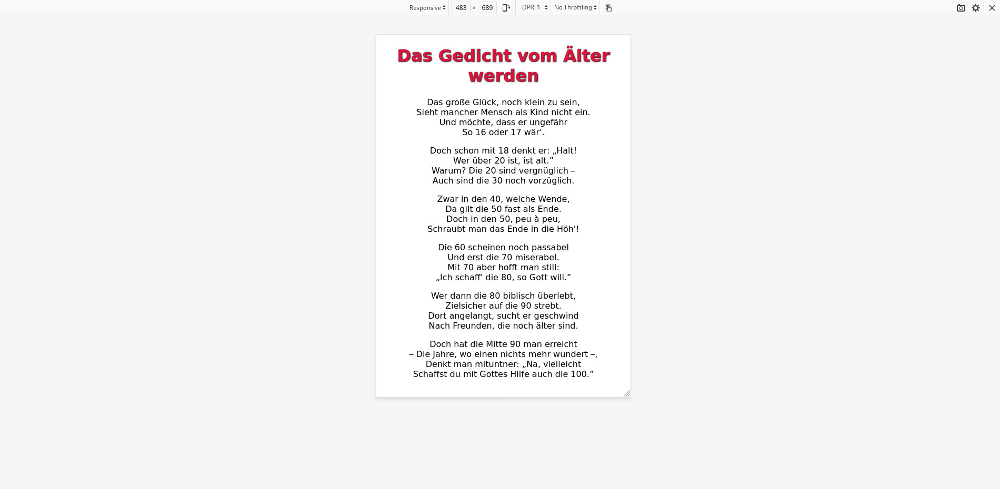
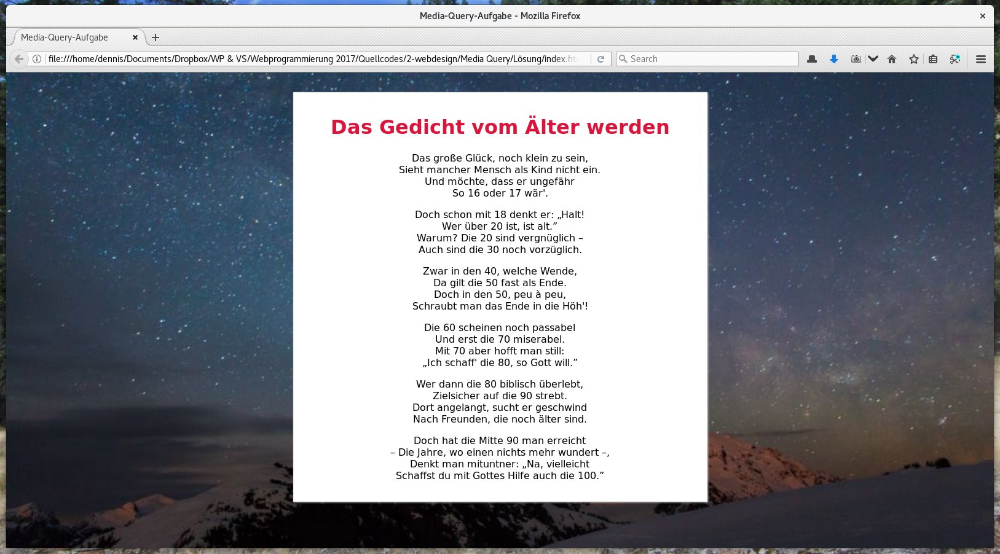
Auf dem Smartphone
Auf dem Smarthpone soll einfach nur das Gedicht angezeigt werden.
Der Text soll über die gesamte Bildschirmbreite zentriert werden.
Es soll kein Hintergrundbild angezeigt werden.
Für Bildschirme ab 50em
Das in der HTML-Datei vordefinierte Hintergrundbild soll sichtbar sein.
Das HTML-Element mit dem Text des Gedichts soll exakt 40em breit sein.
Innerhalb des Elements soll 1em Abstand zum Text bleiben.
Das Element soll einen weißen Hintergrund und einen dezenten Rahmen besitzen.
Das Gedicht soll mit Hilfe des Flexbox-Algorithmus mittig auf dem Bildschirm platziert werden.
Ursprünglich als Einmannprojekt bei Twitter gestartet, wurde Bootstrap 2011 unter MIT-Lizenz veröffentlicht.
Einstiges Killer-Feature war das Grid-System zur Gestaltung responsiver, spaltenbasierter Layouts.
Inzwischen bietet es eine vielzahl von Funktionen, von denen insbesondere größere Projekte profitieren.
Das Video gibt einen Überblick zu Herkunft, Vorteilen und Umfang des Bootstrap-Frameworks.
Anhand eines praktischen Beispiels wird gezeigt, wie ein neues Projekt mit Bootstrap gestartet
und mit den vordefinierten CSS-Klassen ein responsives Layout gestaltet werden kann.
Bootstrap kennt zwei Container-Klassen namens container und
container-fluid, die zur Definition spaltenbasierter Layouts
verwendet werden können. Jeder Container besteht dabei aus einer oder
mehrerer mit der Klasse row markierte Zeilen, die wiederum
in bis zu zwölf col genannte Spalten unterteilt werden können.
Durch entsprechende Zahlenzusätze von eins bis zwölf und die Angabe von
Bildschirmgrößen kann für jede Spalte definiert werden, welche Breite sie
haben soll. Hinzu kommen weitere CSS-Klassen, um die Ausrichtung der
Inhalte oder die Abstände zwischen den Spalten zu optimieren.
<!-- Container mit maximaler Breite (container-fluid) -->
<div class="container-fluid p-0">
<!-- Zeile 1: Drei Bilder nebeneinander -->
<div class="row align-items-center g-0">
<!-- Spalte 1 -->
<div class="col-md">
<img src="nature-1.jpg" alt="" class="d-block w-100" />
</div>
<!-- Spalte 2 -->
<div class="col-md">
<img src="nature-2.jpg" alt="" class="d-block w-100" />
</div>
<!-- Spalte 3 -->
<div class="col-md">
<img src="nature-3.jpg" alt="" class="d-block w-100" />
</div>
</div>
<!-- Zeile 2: Überschrift -->
<div class="row">
<!-- Spalte 1 -->
<div class="col mt-3">
<h1 class="text-info">Genießen Sie die Idylle der Natur!</h1>
</div>
</div>
<!-- Zeile 3: Liste und Text nebeneinander -->
<div class="row">
<!-- Spalte 1 -->
<div class="col-md-4">
<ul>
<li>Traumhafte Seen</li>
<li>Weitläufige Strände</li>
<li>Artenreiche Wälder</li>
<li>Wilde Tiere</li>
</ul>
</div>
<!-- Spalte 2 -->
<div class="col-md">
<p>
Egal ob mit Kindern oder alleine. Bei uns finden Sie garantiert den
passenden Urlaub. Wandern Sie durch dichte Wälder und beobachten Sie
wilde Tiere in ihrer natürlichen Umgebung. Genießen Sie die herrliche
Seen oder wandern sie weitläufige Strände entlang. Abend kehren Sie
dann in Ihre gemütliche Unterkunft zurück und lassen sich kulinarisch
verwöhnen. Wir machen es möglich.
</p>
</div>
</div>
</div>
Obwohl alle Browser heutzutage maximal kompatibel zueinander sind, besitzen sie immer noch
leicht abweichende Voreinstellungen bezüglich der Darstellung einiger HTML-Elemente.
Beispielsweise nutzt jeder Browser eine etwas andere Standard-Schriftart sowie andere
Abstände um Überschriften und Absätzen herum, was zu geringfügigen Abweichungen in der
Darstellung führen kann, wenn die Parameter nicht mit eigenen Werten überschrieben werden.
Manche HTML-Elemente besitzen darüber hinaus von Haus aus entweder gar keine oder eine
sehr altbackende Optik. Bootstrap übersteuert daher sämtliche Vorgaben der Browser zu
Gunsten eines vordefinierten, modernen Erscheinungsbilds.
Bootstrap definiert einheitliche Schriftgrößen, so dass Unterüberschriften immer
kleiner werden.
Absätze bekommen auf allen Geräte eine gut lesbere Schriftgröße.
Mit der Klasse lead können einzelne Absätze hervorgehoben werden.
CSS-Frontends können auch heute noch sinnvoll sein, sagt Max Mustermann,
anerkannter Experte für Webentwicklung und Frontend-Technologien.
War HTML früher eine eher einfach gestrickte Seitenbeschriebungssprache
für Textdokumente und einfache Benutzungsoberflächen, hat sich das Web
spätestens seit der Bekanntgabe von HTML5 zu einer immer mächtigeren
Anwendungsplattform für die unterschiedlichsten Arten von Anwendungen
entwickelt. Kein Wunder also, dass die Kombination als HTML, CSS und
JavaScript heute weit mehr zu leisten vermag, als dies in all den Jahren
zuvor üblich war. Vor diesem Hintergrund mag die Verwendung eines
Frontends für die Frontendentwicklung zunächst überflüssig und altbacken
wirken, doch auch heute können gute Frameworks die Entwicklung bedeutend
vereinfachen. …
<p class="lead">
CSS-Frontends können auch heute noch sinnvoll sein, sagt Max Mustermann,
anerkannter Experte für Webentwicklung und Frontend-Technologien.
</p>
<p>
War HTML früher eine eher einfach gestrickte Seitenbeschriebungssprache
für Textdokumente und einfache Benutzungsoberflächen, hat sich das Web
spätestens seit der Bekanntgabe von HTML5 zu einer immer mächtigeren
Anwendungsplattform für die unterschiedlichsten Arten von Anwendungen
entwickelt. Kein Wunder also, dass die Kombination als HTML, CSS und
JavaScript heute weit mehr zu leisten vermag, als dies in all den Jahren
zuvor üblich war. Vor diesem Hintergrund mag die Verwendung eines
Frontends für die Frontendentwicklung zunächst überflüssig und altbacken
wirken, doch auch heute können gute Frameworks die Entwicklung bedeutend
vereinfachen. …
</p>
Die CSS-Klasse table aktiviert verschiedene Voreinstellungen für
ansprechend gestaltete Tabellen. Wahlweise können die Tabellen dann anhand
zusätzlicher CSS-Klassen weiter optimiert werden.
Alben von Mark Knopfler
#
Jahr
Album
Gruppe
Art
1
1978
Dire Straits
Dire Straits
Studioalbum
2
1979
Communiqué
Dire Straits
Studioalbum
3
1980
Making Movies
Dire Straits
Studioalbum
4
1982
Love over Gold
Dire Straits
Studioalbum
5
1978
Alchemy: Dire Straits Live
Dire Straits
Livealbum
6
1985
Brothers in Arms
Dire Straits
Studioalbum
7
1988
Money for Nothing
Dire Straits
Best Of
8
1990
Missing…Presumed Having a Good Time
The Notting Hillbillies
Studioalbum
9
1990
Neck and Neck
Mark Knopfler & Chet Atkins
Studioalbum
10
1991
On Every Street
Dire Straits
Studioalbum
11
1993
On the Night
Dire Straits
Livealbum
12
1995
Live at the BBC
Dire Straits
Livealbum
13
1996
Golden Heart
Mark Knopfler
Studioalbum
14
1998
Sultans of Swing – The Very Best of Dire Straits
Dire Straits
Best Of
15
2000
Sailing to Philadelphia
Mark Knopfler
Studioalbum
16
2002
The Ragpicker's Dream
Mark Knopfler
Studioalbum
17
2004
Shangri-La
Mark Knopfler
Studioalbum
18
2005
Private Investigations: The best of Dire Straits & Mark Knopfler
Viele weitere HTML-Elemente erhalten durch Bootstrap browserübergreifend ein einheitliches Aussehen.
Hier seien als Beispiele die Elemente <blockquote> zur
Kennzeichnung von Zitaten und <kbd> für Tastenkürzel gezeigt.
Phantasie ist wichtiger als Wissen, denn Wissen ist begrenzt.
Albert Einstein (1879-1955)
Beispiel zur Kennzeichnung von Tastenkürzeln
Die Entwicklungswerkzeuge des Browsers lassen sich mit F12 öffnen.
Shift+Strg+M öffnet hingegen den Responsive-Design-Modus.
<!-- Zitat -->
<figure class="text-end">
<blockquote class="blockquote">
<p>
Phantasie ist wichtiger als Wissen, denn Wissen ist begrenzt.
</p>
</blockquote>
<figcaption class="blockquote-footer">
Albert Einstein (1879-1955)
</figcaption>
</figure>
<!-- Tastenkürzel -->
<h4>Beispiel zur Kennzeichnung von Tastenkürzeln</h4>
<p>
Die Entwicklungswerkzeuge des Browsers lassen sich mit <kbd>F12</kbd> öffnen.
<kbd>Shift</kbd>+<kbd>Strg</kbd>+<kbd>M</kbd> öffnet hingegen den Responsive-Design-Modus.
</p>
Um die browserseitige Darstellung eines Formulars zu übersteuern, müssen lediglich
die CSS-Klassen form-label, form-field usw. dem ansonsten
unveränderten HTML-Code hinzugefügt werden. Dadurch werden die Feldbezeichner und
Eingabefelder auf die Bootstrap-Optik umgestellt. Zur Anordnung der Felder können
dann zusätzliche <div>-Elemente und die
CSS-Klassen des Bootstrap Layout-Grids wie im folgenden Beispiel ergänzt werden.
Über die standardmäßig in HTML enthaltenen Elemente hinaus bietet Bootstrap eine ganze Reihe
häufig benötigter UI-Komponenten, die sich auch einfacheren HTML-Elementen zusammensetzen.
Beispiele hierfür sind Navigationsleisten, Menüs, Karten, Modale Popups, Akkordeons, Tabreiter,
Badges und so weiter, wie sich auch hier im Skript¹ reichlich genutzt werden.
¹
Das Onlineskript setzt ebenfalls auf Bootstrap sowie einer selbst-entwickelten
JavaScript-Anwendung für die Anwendungslogik auf.
Buttons können sehr flexibel gestaltet werden. Neben der Farbe und der Größe
werden unterschiedliche Arten von Buttons sowie Button-Gruppen zur visuellen
Zusammenfassung mehrerer Knäpfe unterstützt.
Karten dienen als allgemeiner Container für umrahmte Inhalte. Ihr Name und ihre Gestaltung
erinnern ein wenig an Quartett-Karten aus der realen Welt. Sie können aber für ganz
unterschiedliche Aufgaben wie zur Darstellung kleiner Inhalte, zur Gestaltung von UI-Panels
oder zur Einrahmung von Formularen verwendet werden.
Karussells zeigen abwechselnd eines von mehreren Elementen mit einer Art Diashow-Effekt.
Normalweise laufen die Bilder automatisch durch. Hier im Skript werden sie aber auch für
die Schritt-für-Schritt-Anleitungen ohne automatische Weiterschaltung genutzt.
Dropdown-Menüs werden überwiegend innerhalb einer Toolbar genutzt, um seltener benötigte
Menüpunkte zu verstecken. Die Inhalte des Menüs können mit Bootstrap sehr frei gestaltet
werden, so dass u.A. reguläre Menüeinträge, Listen, Tabellen, Formulare, Trennstriche
oder Zwischenüberschriften möglich sind.
Diese Seite zeigt eine kleine Auswahl oft eingesetzter UI-Komponenten. Jede Komponente
besitzt darüber hinaus zahlreiche Varianten, so dass sich auch komplexe Oberflächen mit
Bootstrap gestalten lassen.
Um die Entwicklung komplexer Layouts weiter zu vereinfachen, bietet Bootstrap eine ganze
Reihe zusätzlicher CSS-Klassen an, mit denen bestimmte Eigenschaften eines HTML-Elements
wie sein Rahmen, seine Farbe oder die Innen- und Außenabstände definiert werden können.
Bootstrap folgt damit der Philospohie, das komplette Layout in HTML ohne zusätzliche,
selbst-entwickelte Stylesheets zu beschreiben.
Bootstrap definiert eine Reihe semantischer Standardfarben, die als Text- oder
Hintergrundfarbe verwendet werden können. Auf diese Weise soll eine einheitliche
Farbgebung sichergestellt werden.
Mit den opacity-Klassen können einzelne Elemente halbtransparent
dargestellt werden, beispielweise um anzudeuten, dass ihre Inhalte noch nicht
vollständig geladen wurden.
Dezente Umrandungen können, wenn sie richtig eingesetzt werden, einem Layout einen
professionellen Feinschliff verleihen. Bootstrap definiert daher eine Reihe von
CSS-Klassen, mit denen die wichtigsten Parameter gesetzt werden können, wobei hierzu
auch abgerundete Ecken und kreisrunde Elemente zählen¹.
¹
Kreisrunde Elemente werden in CSS mit den Anweisungen
border-radius: 50%; overflow: hidden;
definiert, also denselben Anweisungen, die auch für abgerundete Ecken
verwendet werden. Damit wirklich ein Kreis entsteht, muss zusätzlich
eine quadratische Größe sichergestellt werden.
Schatten können entweder sehr sparsam als Ersatz für einen Rahmen oder zur
pseudodreidimensionalen Visualisierung einer Hierarchie eingesetzt werden.
Die CSS-Klassen von Bootstrap dienen eher Letzterem und orientieren sich
dabei grob am
Google Material Design.
Innenabstände können mit den Klassen p-0 bis p-5
und Außenabstände mit m-0 bis m-5 gesetzt werden.
Durch Anhängen eines weiteren Buchstabens können die Abstände auch nur für
einzelne Seiten gesetzt werden, zum Beispiel mb-3 für den
Außenabstand nach unten oder mt-3 für oben.
s – Links (bei westlicher Links-nach-Rechts-Schreibrichtung)
e – Rechts (bei westlicher Links-nach-Rechts-Schreibrichtung)
x – Links und Rechts
y – Oben und Unten
Keine andere Entwicklung hat das Webdesign so sehr verändert, wie die Standardisierung
des Flexbox-Algorithmus
im Jahr 2018. Seither wurde Bootstrap komplett umgeschrieben, so dass insbesondere das
Grid-Layout auf dem Flexbox-Algorithmus basiert. Aber auch ohne das Grid-Layout können
Flexboxen mit Bootstrap genutzt werden.
Diese Seite zeigt einige CSS-Hilfsklassen von Bootstrap. Die meisten Klassen lassen sich
durch Anhängen von -md, -lg und so weiter auf Bildschirme mit
einer bestimmten Mindestgröße beschränken. Insgesamt decken die CSS-Hilfsklassen einen
großen Teil von CSS-Anweisungen ab, so dass in vielen Fällen auf eigene Stylesheets
verzichtet werden kann (zugunsten eines aufwändigeren und wenig übersichtlichen HTML-Codes).
Auf getbootstrap.com
erscheint sich gleich am Anfang ein Download-Button.
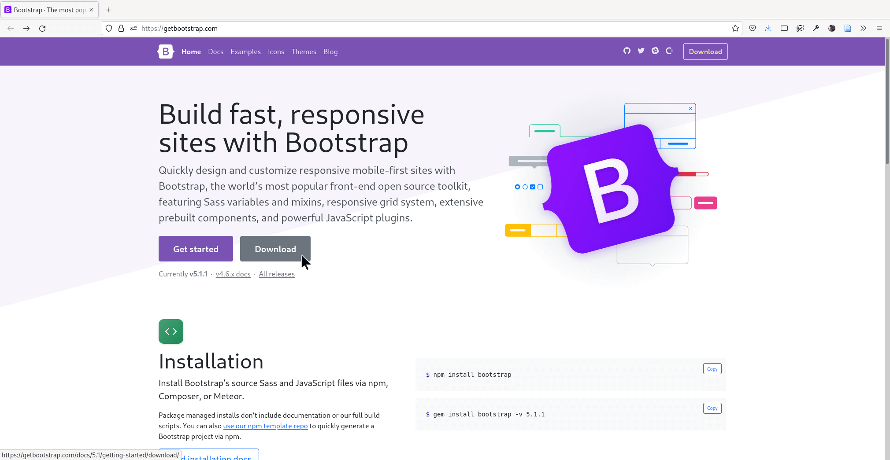
Hier können vorkompilierte CSS- und JavaScript-Dateien heruntergeladen werden.
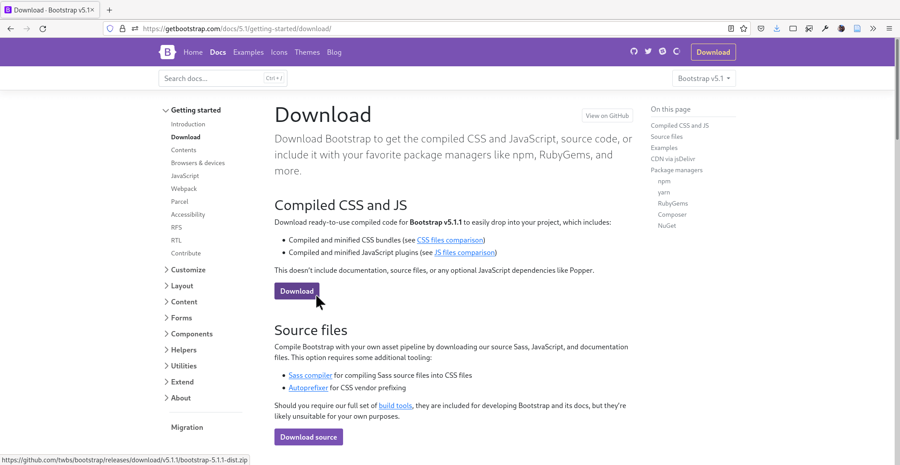
Die ZIP-Datei kann direkt im Projektverzeichnis entpacket werden.
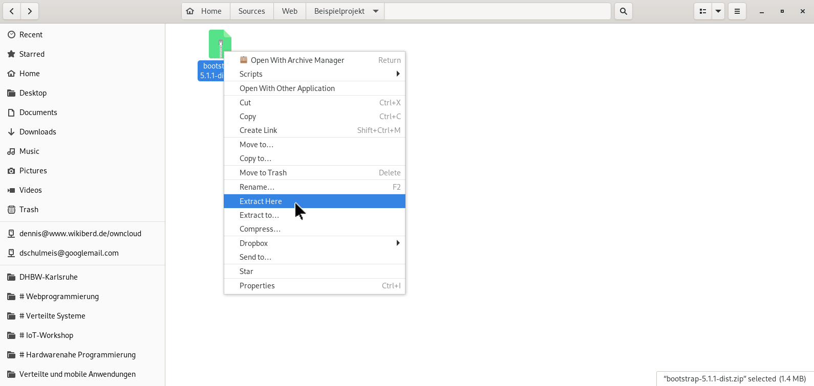
So sollte die entpackte Verzeichnisstruktur aussehen. Der Einfachheit halber
wurde das Bootstrap-Verzeichnis hier in bootstrap umbenannt.
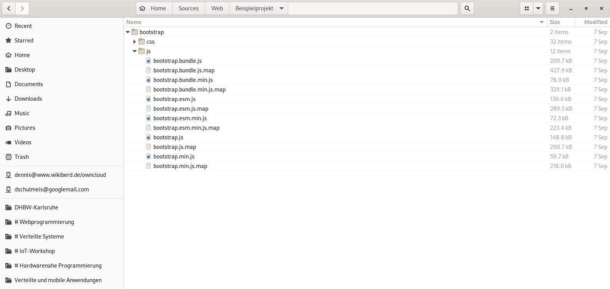
Wahlweise können einzelne Teile von Bootstrap oder das gesamte Framework
eingebunden werden
(Dokumentation hierzu).
Soll das gesamte Framework genutzt werden, werden nur die folgenden Dateien benötigt.
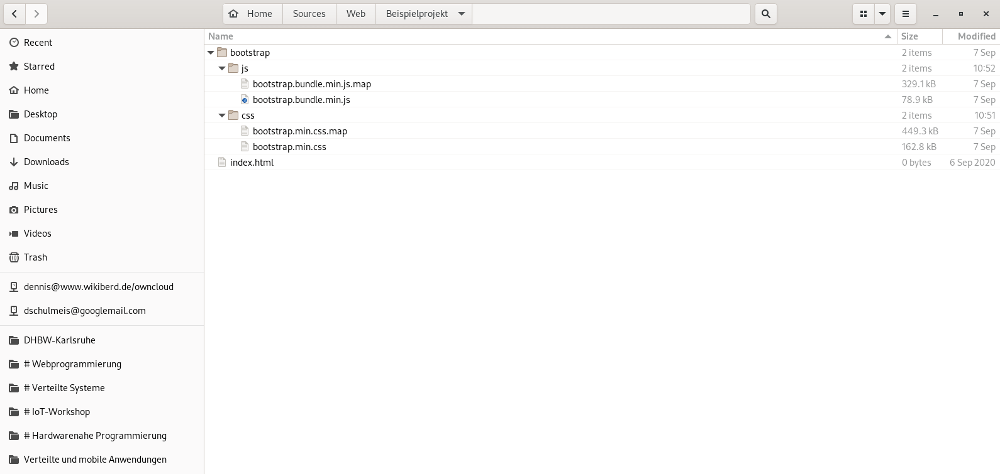
Im Projektverzeichnis sollte eine Datei namens index.html
mit folgendem Inhalt angelegt werden. Im Vergleich zur CDN-Variante unterscheiden
sich hier nur das <link> und
<script>-Element.
Diese laden alle benötigten Bibliotheken und Frameworks aus einem zentralen Repository.
Zusätzlich wird dann noch ein Bundler wie
Webpack oder
Parcel benötigt.
Denn der Package Manager lädt die Pakete nur herunter. Der Bundler kopiert die
Dateien in das Projekt¹.
Sind beide Voraussetzungen gegeben, kann Bootstrap mit einem Befehl wie dem folgenden
installiert werden:
npm install bootstrap
¹
Dies ist eine stark vereinfachte Darstellung. Bundler bauen aus dem Quellcode
einer Anwendung sowie den Quellcodes aller benötigten Bibliotheken so genannte
Bundles, die vom Browser geladen und ausgeführt werden können. Auf diese Weise
wird nicht nur die Integration externer Bibliotheken vereinfacht, da ihre Dateien
nicht manuell in das Projekt kopiert werden müssen. Auch die Ladezeiten können
optimiert werden, indem viele kleine Dateien zu einer größeren Datei zusammengefasst
und anschließend minifiziert werden. Immer besser funktioniert dabei auch das
so genannte „Tree Shaking”, durch das alle nicht benutzten Teile aus dem Quellcode
entfernt werden.
Import Maps
Ein aktuell noch in Enstehung befindlicher Standard sind
Import Maps,
mit denen die Verwaltung externer Abhängigkeiten in der Frontend-Entwicklung
künftig deutlich vereinfacht wird. Der Einsatz von Package Managern und Bundlern
wird dadurch in vielen Projekten überflüssig werden. Da der Standard aber noch
nicht ratifiziert wurde (Stand: Oktober 2021), wird er derzeit nicht von allen
Browsern unterstützt. Siehe
Can I Use: Import Maps.
Aufgabe 3: Ein kleines Bootstrap-Quiz
Eine bekannte Webseite zur Dokumentation gängiger WebstandardsEin HTML-Vorlageprojekt, das als Grundlage für eigene Projekte dientEin clientseitiges Webframework zur einfacheren Umsetzung gängiger UI-PatternsEine weit verbreitete Bibliothek zusätzlicher HTML-Elemente, so genannter Web ComponentsEin Präprozessor, welcher die Syntax von HTML und CSS um weitere Anweisungen ergänztApache 2.0BSD 2-clauseBSD 3-clauseCC-BY-ND 4.0GPL 2.0GPL 3.0LGPL 2.1MITZlib LicenseIn Projekten jedweder Art, solange der Lizenztext von Bootstrap beigelegt wirdAusschließlich in Projekten, die unter derselben Lizenz wie Bootstrap stehenKostenlos in Projekten mit freier Lizenz, kostenpflichtig in kommerziellen ProjektenIn nicht-öffentlichen Testprojekten kostenlos, in öffentlichen Projekten gegen GebührEine Sammlung häufig benötigter Icons im SVG-FormatEine Sammlung von Beispiel-Quellcodes für unterschiedliche WebseitenVordefinierte CSS-Klassen für häufig benötigte Layout-AnweisungenEin CSS-Grid zur Gestaltung sich ans Endgerät anpassender LayoutsVordefinierte UI-Komponenten wie Karten, Karussells, Navigationsmenüs, …Anpassung des Frameworks durch Überschreiben von Theme-ParameternWahrFalschWahrFalschWahrFalsch
<div class="container">
<div class="row">
<div class="col-md-8">...</div>
<div class="col">...</div>
</div>
<div class="row">
<div class="col">...</div>
<div class="col-md-8">...</div>
</div>
</div>
<div class="grid-container">
<div class="grid-row">
<div class="grid-col-md-8">...</div>
<div class="grid-col-md-4">...</div>
</div>
<div class="grid-row">
<div class="grid-col-md-4">...</div>
<div class="grid-col-md-8">...</div>
</div>
</div>
<div class="container">...</div>
<div class="container-fluid">...</div>
<div class="grid-container">...</div>
<div class="grid-fluid">...</div>
<div class="container">...</div>
<div class="container-fluid">...</div>
<div class="grid-container">...</div>
<div class="grid-fluid">...</div>
<div class="row">
<div class="col-md-3">...</div>
<div class="col-md-6">...</div>
<div class="col-md-3">...</div>
</div>
<div class="row">
<div class="col-sm-3">...</div>
<div class="col-sm-6">...</div>
<div class="col-sm-3">...</div>
</div>
a) Welche Beschreibung passt am Besten zu folgendem Quellcode?
<div class="container">
<div class="row">
<div class="col-md-4">…</div>
<div class="col-md-8">…</div>
</div>
<div class="row">
<div class="col-md-12">…</div>
</div>
</div>
Auf mittelgroßen Bildschirmen werden zwei Zeilen mit jeweils zwei Elementen
nebeneinander angezeigt. Auf kleineren Bildschirmen steht alles untereinander.
Auf allen Bildschirmen werden zwei unterschiedliche große Elemente in der
ersten Zeile und ein großes Element in der zweiten Zeile dargestellt.
Auf mittelgroßen Bildschirmen stehen zwei unterschiedlich große Elemente
in der ersten Zeile und ein großes Element in der zweiten Zeile. Auf kleineren
Bildschirmen steht alles untereinander.
b) Welche Beschreibung passt am Besten zu folgendem Quellcode?
<div class="container">
<div class="row">
<div class="col-lg-4">…</div>
<div class="col-lg-4">…</div>
<div class="col-lg-4">…</div>
</div>
<div class="row">
<div class="col-lg-2">…</div>
<div class="col-lg-4">…</div>
<div class="col-lg-3">…</div>
<div class="col-lg-3">…</div>
</div>
</div>
Auf großen Bildschirmen werden zwei Zeilen mit jeweils drei oder vier
Elementen nebeneinander angezeigt. Auf kleineren Bildschirmen steht alles
untereinander.
Auf mittelgroßen Bildschirmen werden zwei Zeilen mit jeweils drei oder
vier Elementen nebeneinander angezeigt. Auf kleineren Bildschirmen steht
alles untereinander.
Auf allen Bildschirmen werden zwei Zeilen mit jeweils drei oder vier
Elementen nebeneinander angezeigt.
Aufgabe 4: Wir erkunden Bootstrap
In dieser Aufgabe wollen wir das Gridlayout von Bootstrap ausprobieren und damit eine kleine
Kachelwand mit Urlaubsbildern erstellen. Lader dir daher das Vorlageprojekt zu dieser Aufgabe
herunter (oder starte die Online-IDE), damit du einen Grundstock an Bildern hast und programmiere
die unten dargestellte Seite nach.
Mein schönster Urlaub
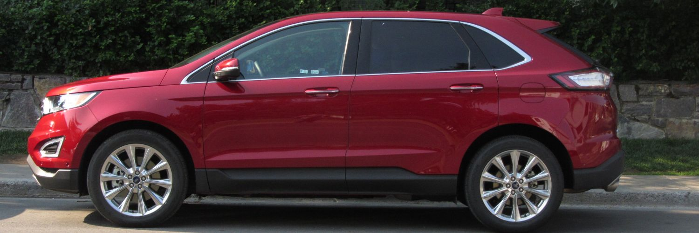
Wir sind viel Auto gefahren.
Aber manchmal auch mit dem Boot.
Finde den Bär.
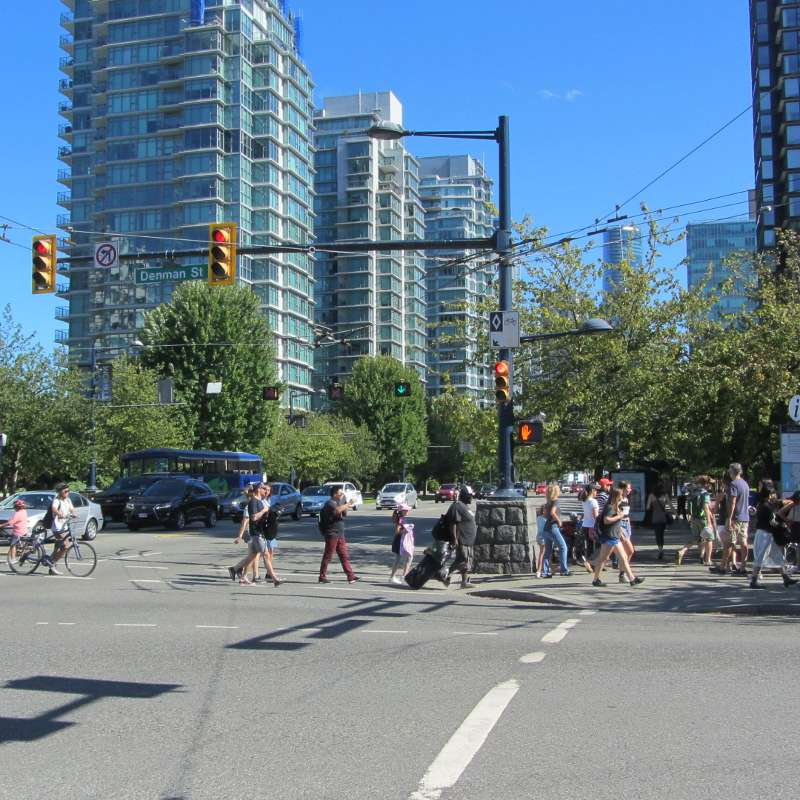
Farbcodes
Die Farbe der Überschrift nennt sich crimson.
Der Farbcode der roten Kachel ist #880033.
Der Farbcode der blauen Kachel ist #005987.
Der Farbcode der grünen Kachel ist #1B8D68.
Die Schriftfarbe ist weiß.
Abstände
Mit <div class="row g-0">
lässt sich der Abstand zwischen den Kacheln entfernen.
Als Innenabstand bieten sich 0.5em an.
Bilder
Die Bilder sollten als Blockelemente mit 100% Breite und 100% Höhe formatiert werden.
Alternativ können die Bilder auch im Stylesheet als Hintergrundbilder gesetzt werden: